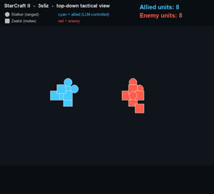
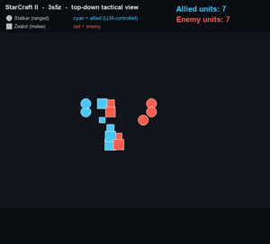
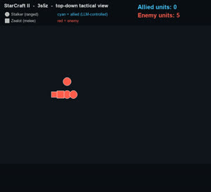
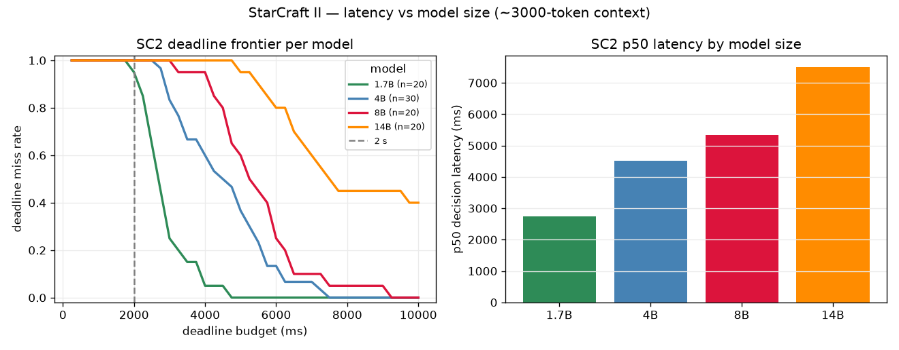

What this is. World Commander studies real-time strategy command through natural language:
a human commander watches the game, hears feedback, and issues commands in plain words —
directing the army, not clicking every unit. The first target scenario is 1 v 1: two
human commanders facing each other. This testbed measures the command system itself — can a
stream of natural-language commands be followed in real time? To run controlled, repeatable
experiments without a person issuing thousands of commands, we substitute a small model
(Qwen3-4B) as an automated stand-in commander. The results below describe that stand-in
and what it implies for the system — not "an AI that plays StarCraft."
TL;DR
Capability — the 4B stand-in only matches the game's built-in auto-attack on
3s5z (~77% win rate vs ~67–81% — not significant), and this held even after the latency
fix let it act ~3× more often (re-measured: 77% vs 81%, p≈0.7). Capability is a separate axis from
latency — not just a speed problem.
Clock — latency is the binding constraint — but far smaller than it first looked. Most of the
in-game "~27 s/decision" was an IPv6 localhost timeout on the Windows→WSL2 call to the
model; switching to 127.0.0.1 cuts a decision to ~6 s (validated end-to-end), and a
bare grounded command to ~0.6 s. Not the model, not the GPU.
Contribution — a validated drop-late primitive: a true real-time clock that discards a
command that misses its deadline (so a slow commander can't "rewind" the game).
1 · How a command becomes an action
StarCraft IIlive game + feedback
→harness: game → text (~3k tokens)
Commanderhuman — here a 4B LLM stand-in
→harness: parse → clicks
StarCraft IIaction runs; new state
Harness = LLM-PySC2: the software between commander and game. It turns the live game into
a text description, passes it to the commander, parses the commands back into in-game clicks, and
advances the game. (For a human commander this layer is the UI; for the stand-in it is text in / text out.)
Command vocabulary (a small fixed set of commands): <Attack_Unit(tag)>,
<Move_Screen([x,y])>, <Stop()>, plus two abilities —
<Blink([x,y])> (a Stalker's short teleport, to reposition/escape) and
<Charge()> (a Zealot's rush to close in).
The units in 3s5z: Stalkers (ranged) and Zealots (melee) — 3 + 5 per side.
Two kinds of "AI" here — kept separate. The game's built-in computer (hand-coded
rules: units auto-attack the nearest enemy; the red enemy army is run by it) is the classic
video-game opponent — what's long been called "the computer." The LLM is a learned stand-in
commander directing the cyan units on top. So this match is commander vs computer; the
program's goal scenario (1v1) is commander vs commander — two humans.
2 · Watch a game
Two views of the same match: the real 3D game, and a top-down render that shows every unit.
The real game (3D)
The actual StarCraft II game, with its normal HUD (minimap, command card, resources);
the replay-loading intro is trimmed. The allied army — the stand-in commander's — is out-fought and
loses. The in-game camera follows the action and can't show every unit at once, which is why the
top-down view below complements it.
Top-down view — every unit
The same game, rendered top-down so every unit is visible — allies cyan, enemy red;
circles = Stalkers (ranged), squares = Zealots (melee); size tracks health; units vanish as they die.
Captions sit in the lower band (never over the units). Sped up (~27 s per real decision).
▶ Prefer to watch it inside the game? Download the replay (opens in StarCraft II).
3 · A command, step by step
Four moments from the game above — the scene, the commander's reasoning in words, and the
command it produced.

① Opening (8 v 8)
"The enemy is close — engage the nearest enemy and charge in."
<Attack_Unit(0x..)> <Charge(0x.., [84,49])>

② Focus fire
"Strong enemy presence — focus the team's fire to eliminate units one at a time."
"The nearest enemy Zealot is in range — attack it."
<Attack_Unit(0x..)>

④ Losing the trade
"Our Stalker is down to 20% health and facing several enemies — keep firing on the closest."
<Attack_Unit(0x..)> <Attack_Unit(0x..)>
The reasoning is sensible RTS micro — focus the nearest/weakest enemy, use abilities — but
"attack the nearest" is largely what units already do on their own, which is why the stand-in's edge over
no commander is small (Section 4).
4 · Results
Capability — does the commander beat the game's own AI?
SC2 units auto-attack — they shoot nearby enemies on their own, with no command. So a win might
owe nothing to the commander; that hidden factor is a confound — a hidden cause that could be
mistaken for the commander's effect. We control for it by also running games with no commander at
all (the units' built-in computer behavior) and only crediting the commander if it wins more:
condition
win rate
n
stand-in commander in the loop
49/64 ≈ 77%
64
no commander (auto-attack only)
32/48 ≈ 67%
48
Gap = +10 percentage points (the absolute difference, 77 − 67), p ≈ 0.25 — not
significant; it shrank as we ran more games (+22 → +17 → +10).
The matchup decides most of it. In SC2 the result hinges on the force matchup: a lopsided map
settles itself — an overwhelming force wins on its own, a hopeless one loses regardless of any commander.
Only a roughly even matchup (3s5z) leaves room for the commander to matter — and there the 4B's effect is
small and within statistical noise.
Re-measured after the latency fix — still no gain. The old ~27 s latency had capped the LLM at
~1 decision/episode; the fix raised it to ~3. Yet the win rate didn't move: LLM 40/52 = 77% vs
auto-attack 29/36 = 81% (p ≈ 0.68). So the null result is not a latency artifact — the 4B
needs to be a better commander, not just a faster one.
The clock — where the latency actually went
Most of the "~27 s/decision" was an IPv6 localhost timeout — not the model. The
harness runs on Windows and calls vLLM in WSL2; resolving localhost tried IPv6
(::1) first and stalled ~21 s before falling back to IPv4. The identical call via
127.0.0.1 has a 0.09 s time-to-first-token vs 21 s. Fix → a decision drops from
~27 s to ~6 s (validated end-to-end in the harness: 4–8 s/call).
What's left is the model itself: ~6 s, and decode-bound. Prefill of ~5 k tokens is ~1.6 s;
generation runs at ~22 ms/tok, so the reply length is the cost. Measured on one state: full
reasoning 6.8 s → grounded action only 2.1 s → grounded on a shrunk state 0.6 s (~11× total). The
lever is shorter output — the human-commander split removes the reasoning — then shorter input.
GPU contention is not a factor — we tested it. Running the model while SC2 rendered
(GPU 69–100% util, 94% memory, game up throughout) left its latency unchanged (~7 s, same as
isolated). The model and the game share one 8 GB 4060 fine — no separate GPU needed.
drop-late (our real-time clock) discards a command that arrives after its deadline. Validated
under the pre-fix ~27 s latency: at a 10 s deadline, 13/13 late replies were dropped, attacks fell
45 → 1, and the agent fell back to auto-attack — the behaviour a real clock must enforce.
Measured — splitting the latency works. In deployment the commander is a
human, so the system's job is just (b) ground a command — not (a) the
reasoning. Timed in isolation, (b) is ~0.6 s vs ~6.8 s for the full reasoning call — an order of
magnitude, and the path toward real time. The command arena already isolates (b), so the two testbeds
align. (These numbers hold even with the game running on the same GPU — contention tested and ruled
out; the historical ~27 s was harness retries, not inference.)
Decision latency by model size (2s3z, amax41 / SC2-4.10)

model
decisions
p50 latency
input tokens (mean)
miss@2s
miss@5s
1.7B
20
2741 ms
3005
0.95
0.00
4B
30
4520 ms
3204
1.00
0.37
8B
20
5344 ms
3011
1.00
0.60
14B
20
7494 ms
3109
1.00
0.95
Each decision carries the full game state plus the unit/ability wiki (~3000 input tokens vs ~200 in the grid arena), so a decision takes seconds, not milliseconds. Unlike the arena, latency here is monotone in model size (1.7B ≈ 2× faster than 8B); every model needs several seconds. Controlled cross-model-size sweep on amax41 / SC2-4.10 (2s3z) — distinct from the yubopc 5.0.15 deployment numbers above; the win-rate / real-time-clock story is in §4.
5 · Methods & caveats
The 4B LLM is an experimental stand-in for a human commander; the program's user is a human.
Win/loss read from the saved-episode file suffix; the auto-attack confound is controlled with no-commander runs.
The demo is rendered top-down from per-step unit data (scripts/render_sc2_demo.py) — camera-independent, every unit shown — from the same game as the linked replay.
Single model (4B); 8 GB GPU caps model size; binomial confidence intervals are wide (pooled n ≈ 48–64/side).
Full data, code patch, and the analysis trail: results/sc2/sweep_2s3z_4B.md in the repo.
World Commander Bench · StarCraft II testbed · 2026-06-21 · private GitLab Pages (members only).